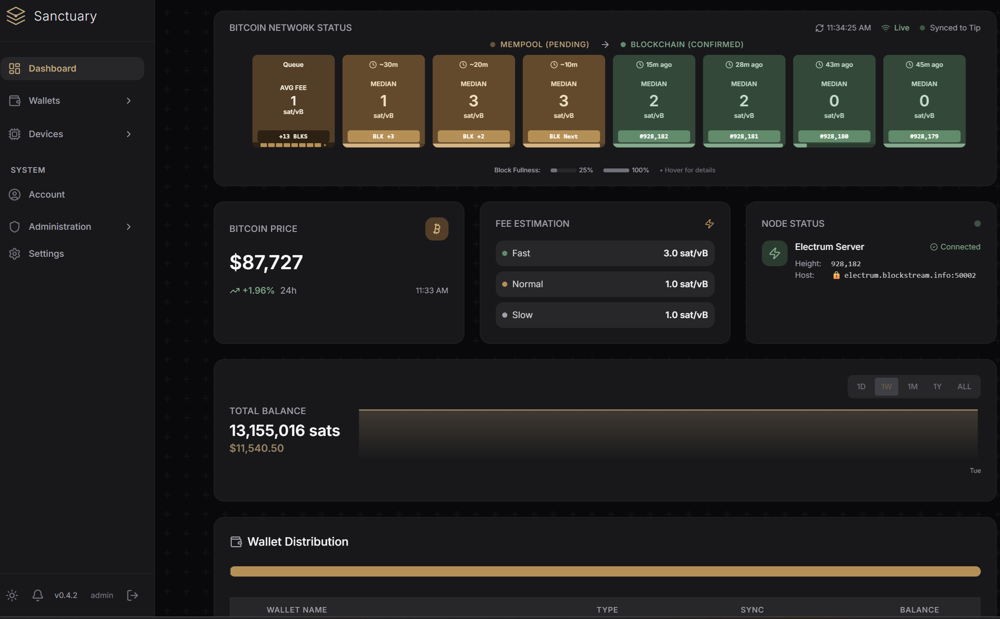
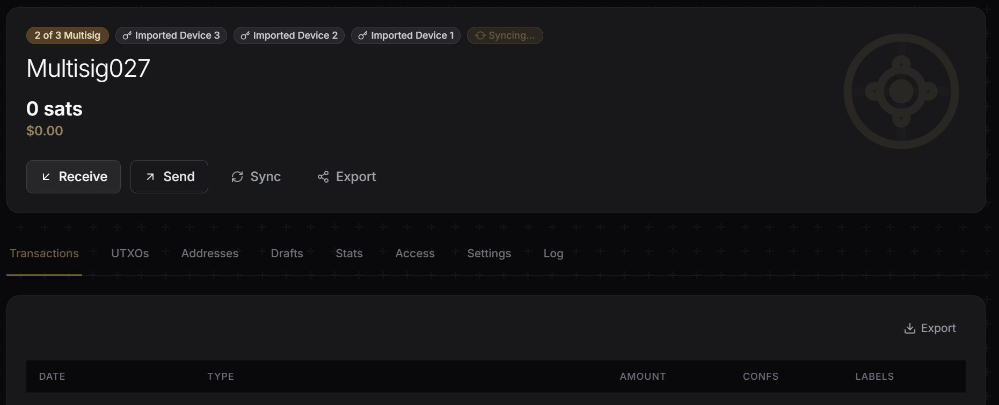
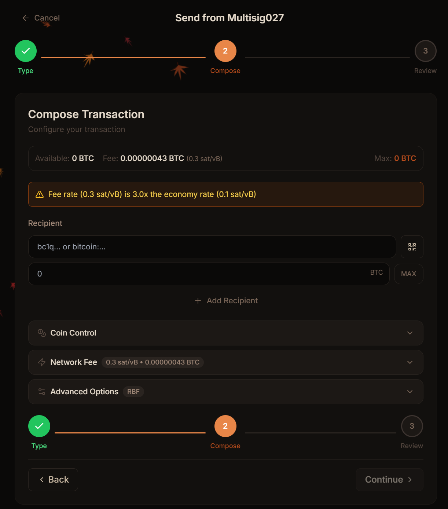
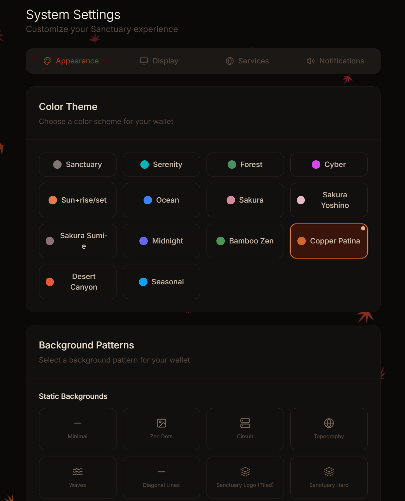

Your keys, your coins, your server.
Sanctuary is a self-hosted Bitcoin wallet coordinator for security-conscious users. Signing happens on your hardware wallet — never in the browser, never on a server. Run it locally, on your private server, or in the cloud.
Open source · MIT licensed · No accounts · No background telemetry

Self-custody, by design
Sanctuary never holds your private keys. It builds and coordinates transactions; signing happens exclusively on your hardware wallet, with every detail shown on the device for you to verify.
Self-hosted, always
Run Sanctuary on your laptop, a home server, or Umbrel — wherever you already trust. No third-party accounts, no tracking, no hosted backend between you and your coins.
Hardware-wallet native
Works with Ledger, Trezor, BitBox02, Jade, ColdCard, Keystone, and Passport — over USB or fully air-gapped via QR codes and PSBTs.
A closer look
Built for clarity and control.
A purposeful interface that surfaces what matters — balances, UTXOs, fees, device status — without hiding the details advanced users rely on.



What's inside
Everything a coordinator should do — and nothing it shouldn't.
Single-sig & multisig
Coordinate across multiple devices and co-signers — from simple single-sig to 2-of-3 and beyond.
PSBT workflow
Standards-based partially-signed Bitcoin transactions — portable between devices and co-signers.
RBF & CPFP
Bump stuck transactions with Replace-By-Fee or accelerate a parent with Child-Pays-For-Parent.
Role-based access
Owner, Signer, and Viewer roles for families and teams. Share wallets without sharing custody.
Air-gapped signing
Import xpubs and sign PSBTs over QR codes — no cable, no bridge, no exposure.
Tor & private nodes
Route through Tor and point at your own Electrum server so no third party watches your addresses.
2FA & audit log
Optional TOTP with backup codes. Every security-relevant event is recorded for review.
Notifications
Real-time transaction alerts via Telegram bot or the companion mobile gateway — on your terms.
Backup & restore
Full data export and import — migrate between machines or keep offline snapshots of your config.
Works with your device
Broad hardware wallet support.
USB, Bluetooth-free, or fully air-gapped via QR. See compatibility details →
Get running in minutes
One command. Any machine you trust.
Docker does the heavy lifting. Pick the path that matches where you want Sanctuary to live.
Fastest path. Clones the repo, pulls images, and starts the stack.
$ curl -fsSL https://raw.githubusercontent.com/nekoguntai/sanctuary/main/install.sh | bash
Clone and run with Docker Compose for more control over configuration.
$ git clone https://github.com/nekoguntai/sanctuary && cd sanctuary $ ./start.sh
Install from the Umbrel App Store if you run an Umbrel node — auto-detects your local Electrum server.
# Open Umbrel → App Store → search "Sanctuary" → Install
Experimental software
Sanctuary is in an early experimental stage and has not undergone a formal security audit. Features may change without notice. Do not use with significant amounts of Bitcoin. Always verify every transaction on your hardware wallet before signing.
Read the full disclaimer